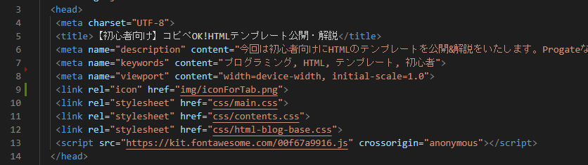

2022/3/31
【初心者向け】コピペOK!HTMLひな形公開・解説


そこで今回はHTMLのひな型を用意しました!
この記事からわかること・できるようになること
- HTMLの書き出し方がわかる
- HTMLの構成がわかる
- よく使うCSSやJavaScriptの読み込み方がわかる
- 無駄な時間を節約できる
目次
- HTMLひな形見本
- 各タグ解説
- 始めの2行について
- <head>について
- <body>について
- <main>について
- まとめ
HTMLひな形見本
では早速、HTMLのひな形を公開いたします。
後ほど解説いたしますので、軽く目を通しておきましょう。
コードの中に度々日本語の部分がありますが、その部分はプログラマーのあなたが自身のサイト情報に合わせて書く部分です。
反対にアルファベットで記載されている部分はコピペ可の部分です。
See the Pen Untitled by Tatsuya Nisato (@ni-m-ta) on CodePen.
HTMLひな形解説
上記のコードについて一行ずつ解説していきます。
始めの2行について
See the Pen Untitled by Tatsuya Nisato (@ni-m-ta) on CodePen.
<!DOCTYPE>タグとは、ブラウザに対して当ファイルはどの言語で書かれているか伝達する役割を果たします。
See the Pen Untitled by Tatsuya Nisato (@ni-m-ta) on CodePen.
htmlタグとは、HTMLの記述の始めと終わりを決めるためのタグです。
<head>内について
See the Pen Untitled by Tatsuya Nisato (@ni-m-ta) on CodePen.
headタグとは、当ファイルに関する様々な情報を記入するためのタグです。
多くの場合ブラウザに表示されないような情報、例えばサイト名やキャプションを記載します。
See the Pen Untitled by Tatsuya Nisato (@ni-m-ta) on CodePen.
metaタグとは、サイトに関する情報を記載する箇所です。
ここでは「文字コード」の種類（例:UTF-8, Shift_JISなど）を指定しています。基本的にはUTF-8が推奨されているので、上記のコードで問題ありません。
See the Pen Untitled by Tatsuya Nisato (@ni-m-ta) on CodePen.
titleタグとは、検索結果に表示されるサイト名及びタブ上に記載されるタイトルを指定するときに使います。
またtitleタグはSEO対策において非常に重要なポイントとなります。適切なタイトルをつけることで、ユーザーを惹きつけるとともにGoogleにも愛されるようになりましょう。

See the Pen Untitled by Tatsuya Nisato (@ni-m-ta) on CodePen.
metaタグの一つであるmeta descriptionタグとは、検索結果一覧におけるタイトルの下に書かれる説明文に該当します。
検索結果に対して直接的にかかわる部分ではないようですが、ユーザーを惹きつけるために重要な要素の一つです。

See the Pen Untitled by Tatsuya Nisato (@ni-m-ta) on CodePen.
metaタグの一つであるmeta viewportタグとは、サイトをスマホやタブレットなどのPC以外で閲覧する際、サイトをどのサイズで表示するかを指定するためのタグです。
上記の書き方以外にも方法はありますが、Googleで推奨されているのは上記の書き方です。コピペして問題ありません。
See the Pen Untitled by Tatsuya Nisato (@ni-m-ta) on CodePen.
linkタグとは、当ファイルとブラウザや外部のファイルとの関係を結ぶためのタグです。
relの部分にはリンクの種類、hrefの部分には該当するURLやファイルのパスが記載されます。
iconの場合hrefに画像のパスを指定すると、指定された画像がタブ部分の絵柄として表示されます。
See the Pen Untitled by Tatsuya Nisato (@ni-m-ta) on CodePen.
relの部分がstylesheetの場合、当ファイルの見た目を決めるCSSファイルのパスを指定します。
このスクリーンショットは本ファイルのhead内を表示しています。
本ページでは紹介していない部分もありますが、是非参考にしてみてください。
<body>内について
See the Pen Untitled by Tatsuya Nisato (@ni-m-ta) on CodePen.
bodyタグとは、ブラウザで表示しsubcontents-subtitleたいものを記入するためのタグです。
See the Pen Untitled by Tatsuya Nisato (@ni-m-ta) on CodePen.
headerタグ及びfooterタグとは、それぞれヘッダーとフッターに関する記述を行うためのタグです。
他のタグでも代用できますが、一般的にヘッダー及びフッターを制作する際にはそれぞれheaderタグ、footerタグを使用します。
See the Pen Untitled by Tatsuya Nisato (@ni-m-ta) on CodePen.
mainタグとは、そのウェブページにおいて主となるコンテンツについて記述するためのタグです。
SEO対策には直接関係ないようですが、読みやすいコードを書くには必要なタグであるといえます。
See the Pen Untitled by Tatsuya Nisato (@ni-m-ta) on CodePen.
asideタグとは、主のコンテンツではなく補助的な内容に関する記述を行うためのタグです。
広告や著者の簡易的なプロフィール欄などが該当します。
See the Pen Untitled by Tatsuya Nisato (@ni-m-ta) on CodePen.
scriptタグとは、JavaScriptに関する記述を行うためのタグです。
上記ではJavaScriptのファイル及びフレームワークを読み込むためのタグとして使用しています。
<main>内について
See the Pen Untitled by Tatsuya Nisato (@ni-m-ta) on CodePen.
articleタグとは、そのウェブページにおける記事の一つを記述するためのタグです。
articleタグを複数個使用することはできますが、その際ウェブページが長くなりがちなのでおすすめできません。
See the Pen Untitled by Tatsuya Nisato (@ni-m-ta) on CodePen.
sectionタグとは、ある記事における一章或いは一節を記述するためのタグです。
複数個使用することができ、うまく使うことで読みやすいコードを記述することができます。
まとめ
以上がHTMLのひな形公開&解説でした。
プログラミング講座を終えたばかりでも、自分の力でコードを書き始めたらわからないことだらけかと思います。そのような初心者へ手助けになれればと思います。
ファイトです!!!!!